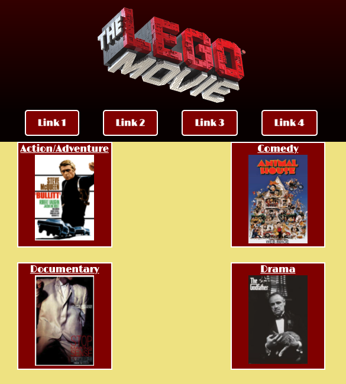

VirtualPets Amok
WCCI team project building a console application manipulating ArrayLists and
incorporating user interaction. Practicing agile methodology
and utilizing test driven design.
Skills/Technologies used: Java; Gradle; TDD; OOP
Click to See the Code


Build Responsive Websites
Udemy solo project building a one page site for fictional food delivery
company Omnifood. Course taught by Jonas Schmedtmann.
Skills/Technologies used: HTML5; CSS3; JavaScript; Bootstrap; PHP
Click to See the Code

3 Thumbs Up Movie Review Site
WCCI team project building a web application to store and display movie reviews,
incorporating MVC and user interaction. Practicing agile methodology.
Skills/Technologies used: HTML5; CSS3; Java; Gradle; Thymeleaf; OOP; MVC
Cllick to See the Code
